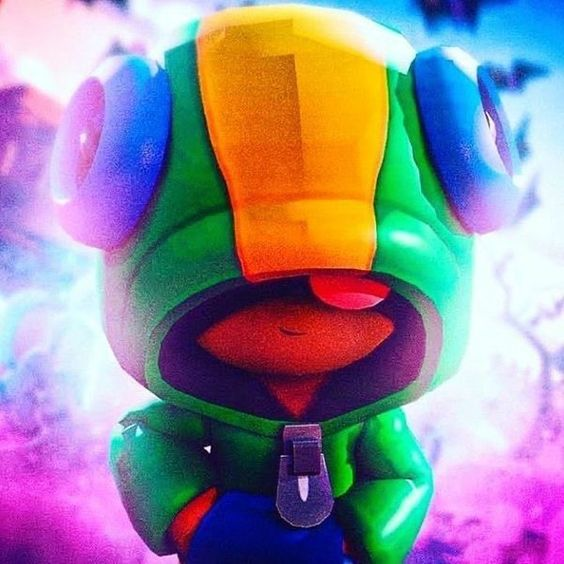

B r a w l s t a r s

Roblox позволяет игрокам покупать, продавать и создавать виртуальные предметы. Одежда может быть куплена любым игроком, но продавать её могут только игроки, имеющие подписку в Premium[9]. Только администраторы Roblox могут продавать части тела, снаряжение и наборы частей тела под официальной учётной записью Roblox[1]. C 2020 года делать аксессуары могут и пользователи с Premium. Предметы с ограниченным статусом могут продаваться только по каталогу или продаваться в Builder Club (нынешний Premium)[10]. Robux — это виртуальная валюта в Roblox, которая позволяет игрокам покупать различные предметы. Игроки могут получить Robux с помощью реальных покупок, другого игрока, покупающего его предметы, или ежедневно зарабатывая Robux с подпиской[6][11].
Роблокс